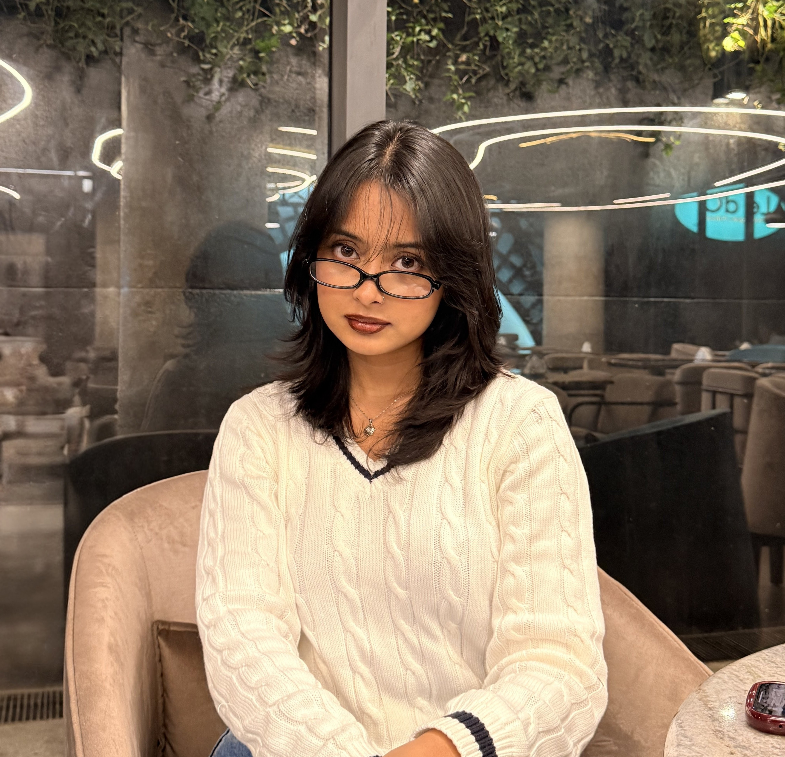
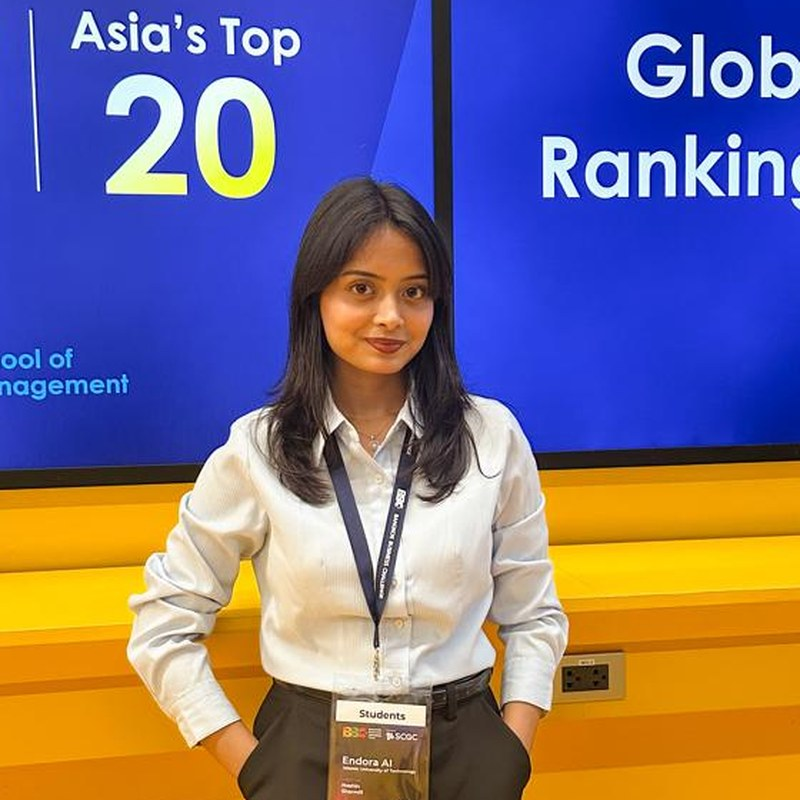

Available for opportunities
Hi, I'm Noshin
Software Engineering student at IUT, building web & mobile products — and turning ideas into award-winning ventures on the case-competition stage.
5
National & global awards
4
Featured projects
B.Sc
Software Engineering

Open to internships

About me
A bit about
who I am
I'm Noshin Sharmili, a Software Engineering undergrad at the Islamic University of Technology, currently in my 6th semester. I build across the stack — from WebRTC classrooms and React Native apps to reusable Java libraries — and care about turning fuzzy problems into clean, usable products.
Outside of code, I lead communications for the IUT Debating Society and compete in social-business and startup case competitions — including a Top-12 finish among 385 teams at the Bangkok Business Challenge by Sasin.
Soft skills
What I work with
Skills
Tools & Platforms
Concepts
The path so far
Education & experience
B.Sc. in Software Engineering
2023 – PresentIslamic University of Technology (IUT) · 6th of 8 semesters
Relevant coursework: OOP, Server Programming, Cloud Computing, Design Patterns, Software Requirements & Specifications.
Team Lead — Communications
2025 – PresentIUT Debating Society (IUTDS)
Lead internal and external communications, event coordination, and sponsorship outreach — a role blending public relations with hands-on organizing.
Cultural House Prefect
2018 – 2020Cantonment Public School and College, Rangpur
Supported planning and management of cultural programs, student activities, and co-curricular initiatives across the institution.
Portfolio
Selected work
EduStream
2026A browser-based virtual classroom powered by WebRTC. I built the client side — virtual meetings, waiting rooms, in-meeting chat and user profiles — and integrated the Excalidraw whiteboard.
View on GitHub →Endora AI
2026An AI-powered platform for early endometriosis detection. I built the official startup website and the in-app Doctor Support module, and ran stakeholder interviews with clinicians to shape the requirements.
Visit live site →PawPal
2025A mobile app that simplifies pet adoption and healthcare. I built profiles, adoption, medical records, foster care, nearby-vet tracking and community Q&A — with Leaflet maps tested via Expo.
View on GitHub →qPhysics
2025A reusable physics library for Java. I implemented Motion, Conversion, Force, Energy and Simulation modules, then packaged it as an exportable JAR for easy integration.
View on GitHub →Recognition
Achievements
Top 12 · Global
2026
Bangkok Business Challenge by Sasin
Selected among the Top 12 of 385 startup teams from 20 countries. Presented Endora AI — early endometriosis detection using guided ultrasound, explainable AI and telemedicine — in a 60-second pitch to an international panel.
2nd Runner Up
2025
Hult Prize IUT
2nd Runner-up among 50+ teams at IUT's edition of the global social-entrepreneurship competition.
2nd Runner Up
2025
National Social Business Case Competition
2nd Runner-up among 100+ teams at the national competition organized by Yunus Social Business Club, DIU.
1st Runner Up
2025
Engibiz
1st Runner-up out of 70+ teams in the tech-business case competition organized by MIST Career Society.
2nd Runner Up
2024
IUT Intern
2nd Runner-up among 48 teams in the Intra-IUT business case competition organized by IUT CBS.
Get in touch
Let's build
something
Open to internships, collaborations and case-competition teams. Whether it's a project idea or just a hello — reach out.